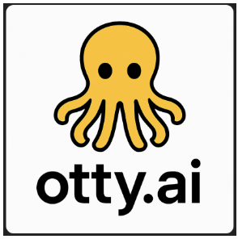

My Portfolio
Technical projects and accomplishments
Otty.AI - Associate Product Engineer
August 2025 - Current
Currently working as an Associate Product Engineer at Otty.AI, where I define product specs with stakeholders and develop frontend features using Cursor.AI for rapid prototyping.
- Collaborating with product and engineering teams on feature development
- Frontend engineering and prototyping
- Product specification documentation
- Stakeholder communication and requirements gathering
Technologies: Frontend development, Cursor.AI, Product Engineering
AuditBoard / FairNow.AI - Engineering Contractor
March 2025 - Current
Working as a QE Engineer on FairNow.AI, an AI-centric B2B SaaS application for governance. After acquisition by AuditBoard, I continue improving the AI Governance platform's UX and functionality.
- Creating and testing user stories and test cases for all features
- Quality assurance testing across sprints
- Bug identification and performance reporting
- Collaborating with developers to ensure high-quality releases
Technologies: QA Testing, Playwright, Agile, Confluence, JIRA
BB Imaging / TeleScan - QA Engineer Intern
May 2024 - August 2024
Interned as a QA Engineer at TeleScan.AI, improving a remote ultrasound platform for sonographers. Created test plans, designed AI training datasets, and pitched new business features to the CEO.
- Designed instructional pop-ups to improve training efficiency
- Tested 90+ new features to high-quality standards
- Created data extraction tool from Microsoft Teams for AI diagnostics training
- Pitched scalable business use case now in product development
Technologies: QA Testing, Data Extraction, Business Analysis
Tian Laboratory - Undergraduate Research Assistant
January 2024 - May 2024
Conducted undergraduate research in the Chemical and Biosensors Lab, supporting the development and evaluation of scalable biosensors for resource-limited environments.
- Collaborated with a PhD researcher to support the design and testing of scalable biosensors using polymer technology, enabling cost-effective deployment in resource-limited environments.
- Conducted data analysis to identify correlations and infer relationships between sodium ion concentrations in sweat and physiological stress indicators.
Technologies: Data Analysis, Research, Scientific Design
My Work & Experience
-
LinkedIn – My full professional background and experience
-
AuditBoard – Company that acquired FairNow.AI, where I now work on the AI Governance Team as a QE Engineer.
-
Texas A&M University – Where I study Computer Science and Business
-
GitHub – Code for this site and personal projects
-

Otty – Early-stage startup project (private)